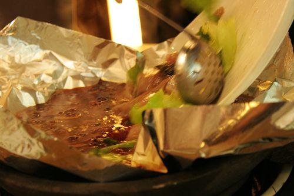
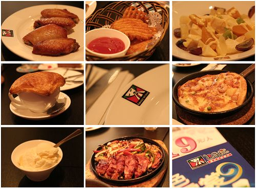

积累了一周的脏衣服，周末用了半个下午清理。手洗了冬天的两件羊毛衫和换下来的真丝衣裙。以前图省事真丝衣物基本放在洗衣机里洗，这次在网络上google了清洗真丝衣物的方法，这才发现还需要购买中性洗涤剂或专门的丝毛洗涤剂，以及晾晒毛衣的篮子。晾晒完衣服，整个房间里都充满洗涤剂的芬芳，心里立刻清新起来。
虽然处于梅雨季节，却少有雨水，天气热懒得买菜做饭，周末的午饭都在外面解决了。前后两天的饭店都在珠江路金鹰天地对面的龙世中心大厦的楼上。周六在“魔石泡泡鱼”吃的，点了招牌菜香辣鱼，草鱼48元，点了黑鱼加10元，味道和一般的川味火锅没特别大的区别，但是这里打的却不是川菜的招牌，打的是长江里的石头的招牌。吃的是个新鲜，新鲜在哪儿？新鲜在它的做法。居然吃饭的时候远远看到集团副总裁带着家小在对面用餐，见他起身两次朝这里张望，犹豫之下我还是没去打招呼，低着脑袋吃，装作没看见。
大楼外立面“魔石泡泡鱼”的店牌，午餐6.7折，晚餐7.8折，车可以停在大厦后面的停车场，餐厅会提供免费停车券；

据说是长江附近的石头雕凿出来的石锅，锅两边的把手可能是龙头，看不清楚；

锡纸上面是锅底，下面是烧得滚烫的400度的石头；

将用料腌制过的黑鱼片下到汤里煮3分钟；

之后将锡纸抽走，整个内容与石头融合在一起，汤沸腾出许多泡泡，这就是魔石泡泡鱼的由来。

饭后来一杯冰的榛子卡布奇诺。有个小插曲，店员送上一杯冰拿铁，我刚喝一口，店员跑来说做错了，取回更换了榛子卡布奇诺给我。哎呦，多可惜啊，那杯拿铁就这么白白倒掉吗？不如免费送给我好了。

周日还是在这栋大楼里用的餐，2楼的“巴贝拉意大利休闲餐厅”。
因为靠着金陵中学和南大，学生特别多。宣传单上的价格真的很有吸引力，图片也很诱惑你的味觉。体验了才了解，食品的份量均比以前我所吃过的类似的餐厅要少。餐具显得很寒酸，尤其吃甜点和冰淇淋的勺子...重复使用的餐具，既然不是一次性的，为何不能稍微增加点成本购进些手感更好的呢？这样也能提升餐厅形象啊。吃到后面，我的耳朵快要受不了了，感觉坐在菜市场里吃饭呢。以后再也不来这家餐厅了！
三个人吃完支付了203元，看着价格是便宜，其实不然。那个9寸的披萨大约19元，是很便宜。不过这里不是享受味觉的场所，是让你填饱肚子的地方。

四个女中学生各点了一份饭，一起吃了个9寸披萨。

餐厅几乎坐满了人，其中肯定有象我这样受到宣传单诱惑，贪图便宜的客人。又一次应验了便宜无好货，一分价钱一分货的真理。到这里吃饭首先要端正心态，我是来吃快餐的。其次要象女学生那样吃才划算，为着吃饱肚子的可以选择这家餐厅。回头想想这个价钱在“悠仙美地”可以吃的更开心！

餐厅的墙纸是玫红色的花朵，硬件设施象模象样，可惜软件差了点，连刷卡机都没配。

这件上下连起来的裙子，可以当半截裙穿，也可以作为抹胸连衣裙。为了安全起见，我在胸部上系了根细细的腰带，将针织挽起一道边盖住它。我这两条肥胳膊再也找不到二头肌啦~~

常常上班饿的时候和Maggie稍稍讨论一下我们共同爱好的美食，交流一下好吃的饭店。我觉得她有小小强迫症，又要我给她一个list，这是第二次布置作业给我，为什么？为什么啊？这次我拒绝了，我说你先给我，不能总是要我分享资源吧？人家答应得可快了~不过就交流的内容来看，我们喜欢的饭店大部分相同哦！看到她居然真的跑去吃我推荐的两个餐厅：新天厨和个中东西，前者更讨她欢喜，招牌菜是膳片。后者我也只是喜欢吃那个山药而已。她写“这个懒鬼每个餐厅就告诉我其中一个字，让我摸让我寻。”罪过罪过，我只记位置，店名什么的一般不仔细看，以后注意。
保守计算，每周吃一个饭店，一年下来吃过南京48个饭店。也不错啊！其实对自己居住的这座城市并不十分了解，活动区域很有限，为什么这么说呢？周五我定的《时尚旅游》第7期到了，这期居然介绍了南京，标题是“南京那些事儿”：
1、紫金山 汤山温泉
2、幕府山-窑上村 2007年幕府山画家村成立并进驻几十位先锋画家；
3、南京大屠杀纪念馆；
4、1912街区；
5、金陵刻经院-很少有人知道此院：淮海路与延龄巷街口；
6、晨光1865创意园；
7、明孝陵-壹咖啡：中山陵风景区明孝陵金水桥旁东侧；
8、朝天宫；
9、夫子庙；
10、鸡鸣寺。
其中有杂志的推荐，粗略分为风景、美食和会所。美食推荐了1912的茶客老站、粤鸿和、清凉山凤凰会馆、珍膳舫和美木龙虾。这里面我只去过茶客老站和粤鸿和，其余三个没去过，要找机会去吃一吃。南京人提到龙虾当属星湖饭店的龙虾又干净又好吃，除此之外有名气的还有龙妹和杨四，这个“美木龙虾”倒真没听说过。几周前南京城市频道的《新闻夜宴》讨论龙虾用“洗虾粉”清洗的危害性，一般小饭店为了快速让龙虾变得漂亮基本会用洗虾粉清洗。而大的饭店，比如星湖饭店，专门研发了一套清洗龙虾的流水设置，所以品牌还是有一定信任度的。否则砸了牌子丢了钞票啊！
会所仅推荐了“廿一会所”，看了杂志才晓得，之前一点不知道，真是惭愧呢。google了下，这个会所除了招聘信息之外，没有自己独立的网站介绍。目前好象还处于试营业状态。据说会所里移植了400多年的老戏台，梅葆玖等名角曾经在此登台亮相。经过全新打造，入口处以最新媒体科技，投影出两尺见方的锦鲤戏水图，而且图象轻盈流动。戏台金碧辉煌，三面临水，夜光点亮后宛若不真实的仙境。《牡丹亭》被缩编成两小时，每夜娓娓唱来，舞台背景同样采用最新的多媒体，为著名画家马德的多幅水墨数码画前后翻篇而成，不同场景，不同的画面，这样的舞台布置，在国内昆曲演绎中是惟一的。
杂志上写的10个地方，我有三个地方没去过，去过也未必等于熟知，所以，旅行无处不在，即使是在自己居住工作的城市，还有许多待开发的地方等着被了解和感受。
19 Responses to “杂七杂八的周末”
2009-07-05
我还蛮爱你穿那件红格子无袖的。裙子蓝的也很正。
巴贝拉是完全不好吃的地方，虽然便宜，但吃饱了也不觉得幸福。：（
2009-07-05
“虽然便宜，但吃饱了也不觉得幸福。”这话说出了我的心声！我就是带着这种不幸福感离开巴贝拉的！MM能接受格子衬衫后面露背的款式？
2009-07-05
能啊。如有你这般美背。。。
2009-07-05
熙南里街区好象值得去踩踩点。今天有张照片我很喜欢，你猜是哪张？
2009-07-05
那杯拿铁 肯定被服务员给喝了
2009-07-06
喜刷刷喜欢的也是格子衬衫？
2009-07-06
啊哦，超喜欢白衣+蓝裙，精致、飘逸的感觉，美滴女人味蛮足滴。什么时候俺俩去搓一顿啊？
2009-07-06
穿的很清凉~~
2009-07-06
很好看的街拍~~
2009-07-06
正在装修房子，效果图总是不能很满意，什么时候能看一些茶家里的图片？：）好期待
2009-07-06
我倒喜欢蓝白搭，赞赞
2009-07-06
我喜欢最后一组左，所有的线条都很到位，呵呵～～满意！
2009-07-06
“旅行无处不在，即使是在自己居住工作的城市，还有许多待开发的地方等着被了解和感受“的确如此。只是通常人们都喜欢舍近求远。。。距离产生美。
2009-07-06
Look at your back!! I should have deleted my photo.:)
2009-07-06
我知道你这么说就是要我夸你，嘿嘿~
你的后背真的很好看啊！！！不许删！！！
2009-07-07
同学，你的蓝裙子很漂亮的说。。。在哪儿买的呀？
2009-07-07
在一家卖外贸衣服的小店买的，就一条哦，还是去年买的，不好意思~~~
2009-07-07
o，真的很漂亮！茶气质很好。更喜欢你美好的生活。
2009-07-08
谢谢你的欣赏~
Leave A Reply
存档只读，评论已关闭。